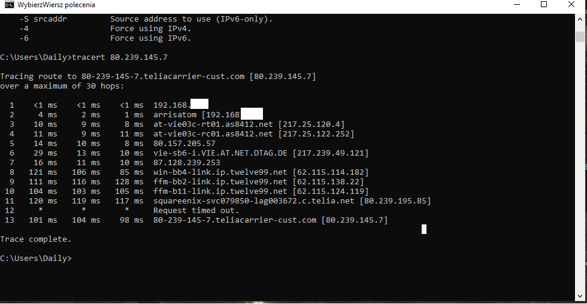
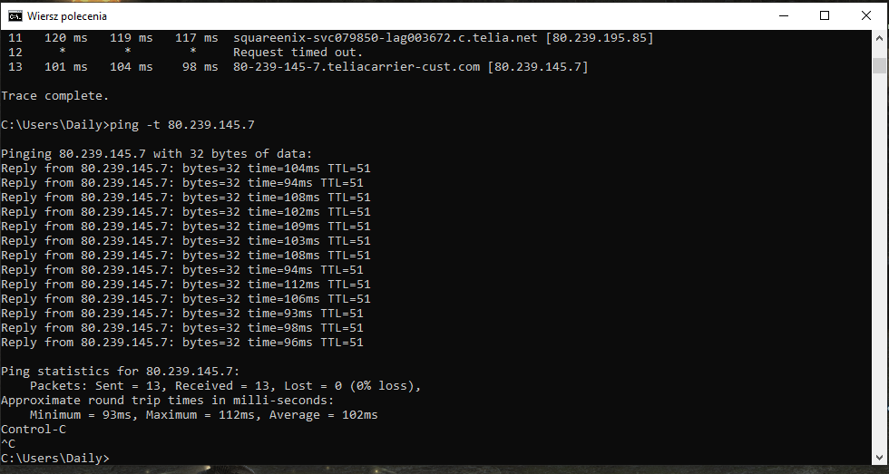

ich habe seit ca. 4 Wochen extreme Lags im Online SPiel Final Fantasy XIV, davor hatte ich keine Probleme damit.
Die Lags treten bei allen Routern auf die ich versucht habe (Fritzbox! 6850LTE, der schwarzen Magenta HomeNet Box von Huawei, der neuen Home Internet Flex Box ZTE MF289D von Magenta und TBLink Archer MR600).
Tarif: Internet Flex 150 i
Up- und Download sowie Ping sind im normalen schwankungsbereich wenn ich die Teste, auch während die Lags auftreten (40-60 down / ~15 up / 25-40ms Ping, mehrfach an verschiedenen Tagen getestet bei Ookla und Google Speedtest).
Filme Videos laufen ganz normal, da gibt es keine Probleme.
Die Lags treten ausschließlich dann auch, wenn ich Magenta LTE benutze, wenn ich mit A1 LTE Spiele läuft alles ganz normal, auch wenn der up/download dort schlechter ist, Ping ist in etwa gleich. Habe A1 mit dem A1-Router sowie Fritzbox und TB-Link getestet, läuft bei allen problemlos.
Bin im LTE-Netz von Magenta in der Südoststeiermark falls das was hilft.
Spiele in der Zeit zwischen 18:30 Uhr und 20:30 Uhr.
Keine ahnung was ich noch versuchen soll, Router und Spielehersteller sind scheinbar nicht das problem da mit A1 alles funktioniert.
__________________________
Edit:
Lags heute 15.11.2022 waren spürbar aber noch nicht so arg wie vor 2 Tagen.
Traceroute und Ping im Anhang, 1x mit Magenta wo es lagt und 1x mit A1 ohne lags.
bist du via LAN mit deinem Modem verbunden? Hast du auch schon mal den
APN geändert
? Eventuell hilft es auch, wenn du dein Modem einmal auf Werkseinstellung zurück setzt.
sorry für die späte rückmeldung, war beruflich unterwegs.
Bin via LAN mit dem Modem verbunden, APN ändern hat nichts gebracht, Modem auf Werkeinstellung zurücksetzen auch nicht.
Die Lags treten nur in Final Fantasy 14 mit Magenta bei allen Modems die ich habe auf und soweit ich feststellen konnte immer ca. zwischen 18:30 bis 20:30 Uhr an Wochentagen. Hab wochenends mal Vormittag und Nachmittag versucht, da gabs keine Probleme.
Beim anderen Anbieter A1 mit den selben Modems konnte ich keine Lags feststellen, also gehe ich mal davon aus das meine Modems in Ordnung sind.
Weiters tritt das Problem auch nur in Final Fantasy 14 auf, nicht aber bei anderen Online Spielen wie z.B.: New World Online.
Hab mit nem bekannten aus Wien gesprochen der hat dasselbe Problem im selben Spiel mit Magenta, aber nicht LTE sondern irgendwas mit Kabel, keine Ahnung welches.
Ich für meinen Teil werde einfach nach bedarf umstecken, bitte aber das Problem dennoch an eure Techniker zu melden da nicht jeder den Luxus von 2 Anbietern hat
.
Haseo
Ich habe diese probleme auch, hier is mein tracert Test


und ping.
Ich bin auf die LANKable und ich habe diese 250mb packung. Das Lag ist sehr schrecklich.
Haseo
Could someone help here?
bbi
vor 1 Stunde schrieb Haseo:
Could someone help here?
Hotline anrufen und sie nerven bis Sie was tut, Ich und ein paar leute mit diversen kabel tarife alle sehen das gleiche tracert result. Je mehr Leute das selbe Problem meldet desto mehr chancen dass sie was tut.
Zumindest wissen wir das ist nicht ein "Ich" Problem, sonder es legt an der node von der Deutsche Telekom
es geht vom 17 bis 23 uhr, das gleiche Problem gabs auch bei 1.1.1.1 im Ende November bis Dezember, diese wurde mittlerweile fixiert weil mehr leute treffen statt nur Gamers.
Haseo
vor 38 Minuten schrieb bbi:
Hotline anrufen und sie nerven bis Sie was tut, Ich und ein paar leute mit diversen kabel tarife alle sehen das gleiche tracert result. Je mehr Leute das selbe Problem meldet desto mehr chancen dass sie was tut.
Zumindest wissen wir das ist nicht ein "Ich" Problem, sonder es legt an der node von der Deutsche Telekom
es geht vom 17 bis 23 uhr, das gleiche Problem gabs auch bei 1.1.1.1 im Ende November bis Dezember, diese wurde mittlerweile fixiert weil mehr leute treffen statt nur Gamers.
Would they even care when non-german speaker makes complain?
Also which hotline to call?
Bearbeitet
von Haseo
bbi
vor 9 Minuten schrieb Haseo:
Would they even care when non-german speaker makes complain?
Also which hotline to call?
Doesnt hurt to try, 0676 2007 777 is the number. just keep pressing 1, it goes like Internet&phone > cable internet > allow us to record for learning purposes
It is important to let them know this is not a "you" problem. Try your best to explain them that a lot of people are having the same problem only with Magenta and it's been going on for a while.
You may have to call multiple times to get a support that knows stuff, if you get someone that keeps telling you to restat your router just hang up and call again, until someone understands the issue and can forward it somewhere higher..
Like i said the more people report the exact same problem, the more likely it is to get fixed sooner..
Jonathan Dorian
Hallo zusammen,
treten hier die Lags nach wie vor auf? Konnte das Problem schon gefunden und gelöst werden?
LG JD.
Thomas R
Hello,
hab das selbe Problem über Monate und den Thread gefunden. Gibt es jetzt eine Lösung oder muss ich wirklich den Anbieter wechseln?
LG Thomas
Dieter Dödel
Am 21.6.2024 um 08:04 schrieb Thomas R:
Hello,
hab das selbe Problem über Monate und den Thread gefunden. Gibt es jetzt eine Lösung oder muss ich wirklich den Anbieter wechseln?
LG Thomas
Wie an anderer Stelle geschrieben:
Also wenn das Problem nur bei diesem Game auftritt und sonst nicht, würde ich mal davon ausgehen, dass die Game-Server Probleme haben und nicht der Anbieter. Wäre es ein allgemeines Problem, hättest du bei jeden Game einen höheren Ping. Frage mal beim Support von deinem Online Game nach, ob sich da was machen lässt.
{kind=link}